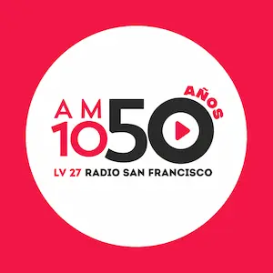
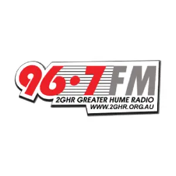
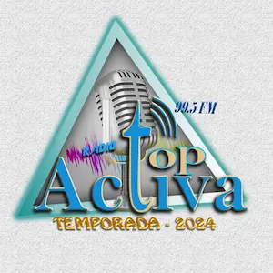
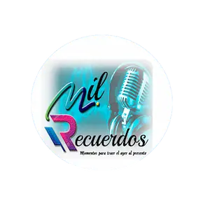

Radio Digital Malayali
A 24/7 Indian lo-fi music web radio initiative by Digital Malayali.
Mixify Radio
Eternal sanctuary for the soulful tunes of Hindi music.

AM 1050
An AM radio station from Cordoba, Argentina.
FM Universo 957
#24hsSoloMusica, without pauses, without cuts, without breaks.

96.7 2GHR FM
Greater Hume Shire's very own community radio station.

Radio Top Activa 99.5 FM
Radio Top Activa broadcasts on 99.5 FM from Challapata, Bolivia.
Radio Mocambos
Casa de Cultura Tainã is a non-profit cultural and social entity.

Radio Mil Recuerdos
Memories that live through time in Guayaquil.